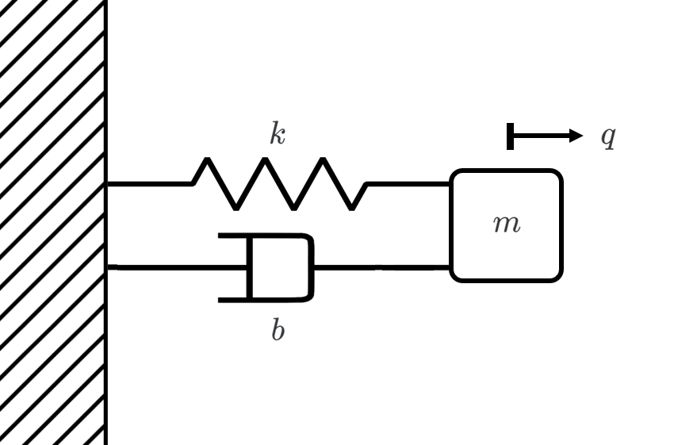
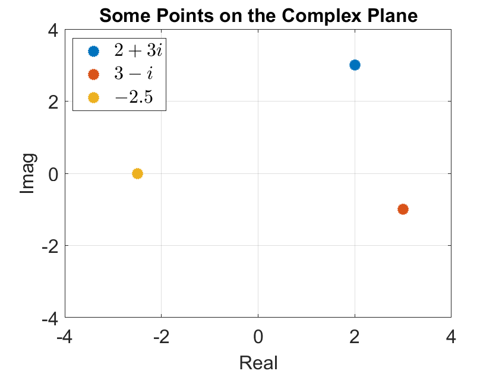
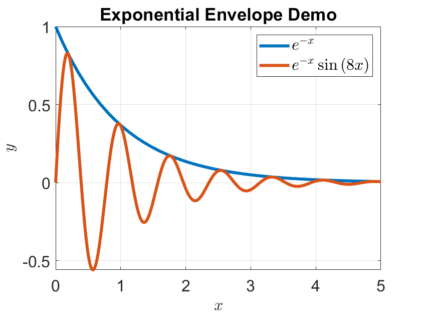
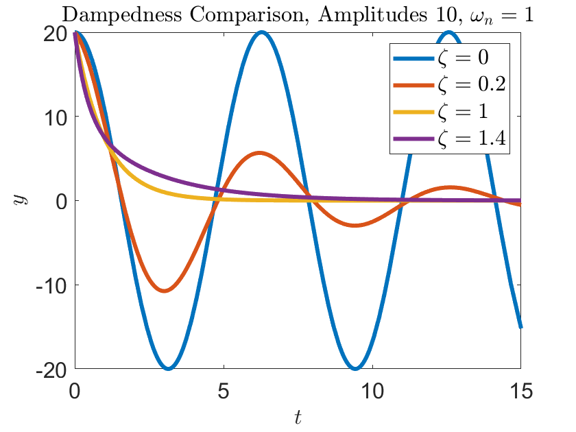
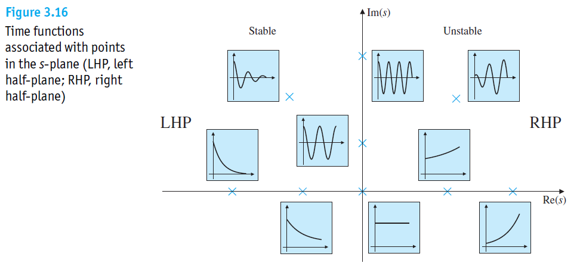
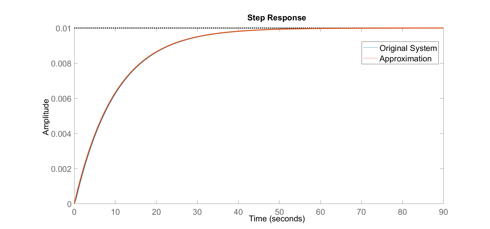
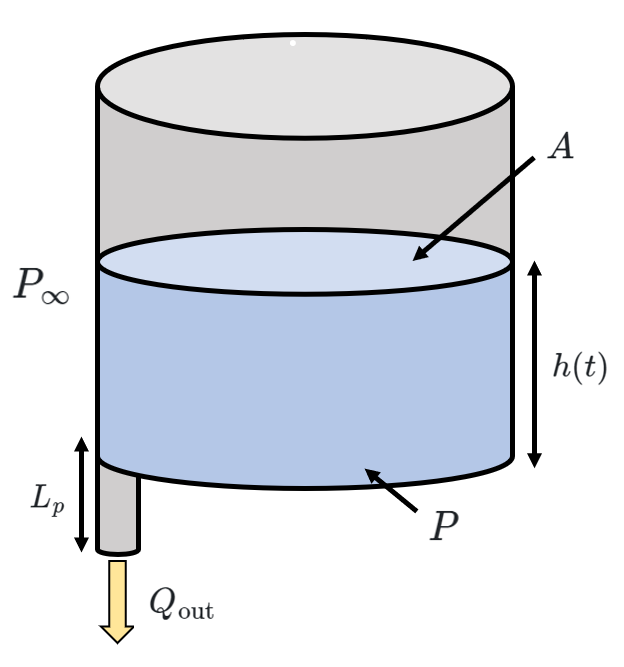
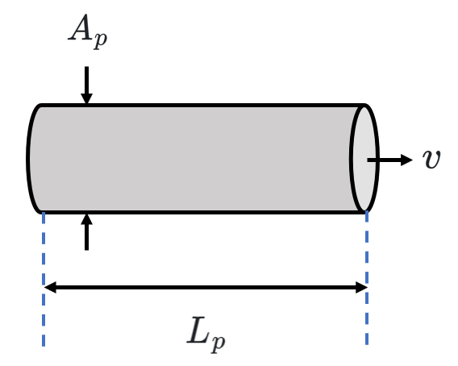

3 Our Second Order of Business
Preface
First order systems aren’t that interesting. They exhibit a certain…simplicity in their response to a step input, characterized by pure exponential behavior. (However, it’s important to appreciate the fundamental nature of this behavior, as it lays the foundation for understanding more complex dynamic systems.)
Nevertheless, first order systems lack the necessary components to sustain oscillatory behavior…which really stinks because oscillation represents a fundamental behavior observed in many natural and engineered systems.
Second order systems, on the other hand, can oscillate by themselves. 1
Mass-spring systems are pretty versatile models for a really wide range of phenomena (as long as you use enough mass-spring systems). They’re really nice because having a good understanding of ONE mass-spring system provides us with the intuition for more complicated systems. While mass-spring systems may not capture all the intricacies and complexities of real-world phenomena, they serve as an invaluable tool for providing a framework for understanding a LOT of systems.
3.1 Mass and Spring

Say we have a mass-spring system where a mass \(m\) is attached to a wall with a spring with spring constant \(k\) and a dashpot with damping coefficient \(b\), as pictured above. (Gravity isn’t “turned on” in this scenario.) The equation of motion for a positive displacement \(q\) is:
\[ ma = \sum F \] \[m\ddot{q} = -kq - b\dot{q}\] \[m\ddot{q} + b\dot{q} + kq = 0\]
This is a linear differential equation, so we’re able to solve this pretty easily. We’ll assume a solution of the form \(q(t) = Ae^{st}\), where \(A\) is a constant to be determined. \[m \left( s^2 Ae^{st} \right) + b \left( sAe^{st} \right)+ k \left(Ae^{st} \right)= 0\]
Cancelling out the common term \(Ae^{st}\), we get:
\[ms^2 + bs + k = 0\]
This is known as the characteristic (or auxiliary) equation. We can solve this quadratic equation to find the values of \(s\), which are also known as the poles of the system.
\[s_{1, 2} = \frac{-b \pm \sqrt{b^2 - 4mk}}{2m}\]
We can simplify this expression further by defining the natural frequency \(\omega_n = \sqrt{\frac{k}{m}}\) and the damping ratio \(\zeta = \frac{b}{2m\omega_n}\). With these definitions, the poles can be written as:
\[s_{1, 2} = -\zeta \omega_n \pm \omega_n \sqrt{\zeta^2 - 1}\]
In terms of the variables \(\zeta\) and \(\omega_n\), the mass-spring equation can be rewritten as:
\[\ddot{q} + 2\zeta\omega_n \dot{q} + \omega_n^2 q = 0\]
The damping ratio \(\zeta\) and the natural frequency \(\omega_n\) provide important insights into the behavior of the system. However, note that the value of \(\zeta\) is crucial in determining the nature of the poles of the system; it directly affects whether they’re real or imaginary.
Before we deal with that, though, I’ll introduce some technology from complex analysis to make our lives a bit easier.
Complex analysis is the study of functions of a complex variable \(z\), where \(z\) has a real component \(a\) and an imaginary component \(b\). Complex numbers show up all the time in this course, whenever anything oscillates, really (like mass-spring systems or pendulums).
To take our first plunge into complex analysis, we need to define the imaginary unit \(i\).2 \(i\) is a number that satisfies the equation \(i^2 = -1\). Since the square of any real number is always non-negative, there is no real number that safisties this equation. Thus, \(i\) is considered an imaginary number. (Ooh!)
Recall from algebra that every non-constant polynomial over \(\mathbb{R}\) can be factored into linear and quadratic terms. Any real quadratic can be factored into linear terms over \(\mathbb{C}\), the set of all complex numbers. As such, \(\mathbb{C}\) has the roots of all polynomials over \(\mathbb{R}%\).
This is really special - in other words, every polynomial of degree \(n\) has \(n\) complex roots, counting multiplicity. This is known as the Fundamental Theorem of Algebra - it’s a nice thing to stash in the back of your head, and it’ll come back in a bit.
Let’s conjure up a graphical representation of these complex numbers using Cartesian coordinates, where the real numbers are represented along the \(x\)-axis and the imaginary numbers along the \(y\)-axis. We’ll call this the complex plane.
In this representation, a complex number \(z = a + bi\) can be visualized as a point in the two-dimensional Cartesian plane, with the real part \(a\) as the \(x\)-coordinate and the imaginary part \(b\) as the \(y\)-coordinate.

By plotting these complex numbers on the plane, we can observe their geometric relationships. Additionally, algebraic operations can be understood in terms of vector addition, subtraction, and scalar multiplication.
Complex numbers can also be interpreted in the context of polar coordinates - in polar coordinates, a complex number \(z = a + bi\) is described by two quantities: the magnitude \(r\) and the argument \(\theta\). The magnitude \(r\) represents the distance from the origin \((0,0)\) to the point representing the complex number \(z\) in the complex plane. It’s calculated using the Pythagorean theorem:
\[r = \sqrt{a^2+b^2}\]
The argument, denoted as \(\theta\), represents the angle between the vector from the origin to \(z\) and the positive real axis, measured counterclockwise. The argument can be determined as follows (with additional precautions depending on the quadrant):
\[\theta = \arctan \left( \frac{b}{a} \right)\]
Converting back to Cartesian coordinates is trivial.
\[a = r \cos{\theta} \qquad \qquad b = r \sin{\theta}\]
It’d be criminal to not mention Euler’s formula, which connects trigonometric functions to the complex exponential: 3
\[e^{i\theta} = \cos{\theta} + i \sin{\theta}\]
This result demonstrates the connection between exponentials and trigonometric functions, bringing together complex numbers, angles, and the unit circle. It also means that we can express complex numbers in the elegant form:
\[z = a+bi = r\cos{\theta} + i r \sin{\theta} = r (\cos{\theta} + i \sin{\theta}) = re^{i\theta}\]
This is really useful. It simplifies complex number arithmetic, enables efficient calculations of powers and roots, and provides a natural framework for solving differential equations involving complex variables.
Phew. Okay, back to springs.
We know from our study of differential equations that \(q = e^{st}\) is a solution of the equation when \(s\) is a pole of the system. Let’s break each possibility down case by case.
When \(\zeta = 0\) (or when the system is undamped), the poles are:
\[s_{1, 2} = -\zeta \omega_n \pm \sqrt{\omega_n^2 (\zeta^2 - 1)} = \pm \sqrt{-\omega_n^2 } = \pm i \omega_n\]
And the solution is: \[q(t) = A_1 e^{i\omega_n t} + A_2 e^{- i \omega_n t} = A_1 (\cos(\omega_n t) + i \sin(\omega_n t)) + A_2 (\cos(\omega_n t) - i \sin(\omega_n t))\] \[= (A_1 + A_2) \cos(\omega_n t) + i(A_1 - A_2) \sin(\omega_n t) = C_1 \cos(\omega_n t) + C_2 \sin(\omega_n t)\]
Physically, when a mass-spring damper system is undamped, the mass will oscillate forever.
When we pick a damping ratio \(\zeta\) between 0 and 1 (or the system is underdamped), the poles are:
\[s_{1, 2} = -\zeta \omega_n \pm \sqrt{\omega_n^2 (\zeta^2 - 1)} = -\zeta \omega_n \pm i \omega_n \sqrt{1 - \zeta^2}\]
We further consolidate the definition of these poles using two additional definitions: we define the damped frequency \(\omega_d = \omega_n \sqrt{1-\zeta^2}\), and a “growth parameter” \(\sigma = \zeta \omega_n\).4 These result in a more concise representation of the poles:
\[s_{1, 2} = - \sigma \pm i \omega_d \]
Our solution, given these poles, is: \[q(t) = A_1 e^{(-\sigma + i\omega_d) t} + A_2 e^{(-\sigma - i\omega_d) t} = e^{-\sigma t} (C_1 \cos(\omega_n t) + C_2 \sin(\omega_n t))\]
Representing the solution as a product of a real exponential and a linear combination of sines and cosines allows us to characterize the exponential envelope by which the oscillation decays. An envelope is a function that outlines the extremes of a function. The figure below shows a sinusoidal wave and its upper envelope.

Notably, the time constant \(\tau\) of the envelope is equal to \(1/\sigma\). Thus, we can eyeball the value of \(\sigma\) based on how we’d find the time constant (the value \(63\%\) less than the \(y\)-intercept of the envelope). \[q(t) = e^{-\sigma t} \sin(\omega_d t + \varphi)\]
Most mechanical systems tend to have a pretty low damping ratio (\(\zeta \simeq O(0.1)\)),5 and a good rule of thumb is that \(\omega_n = \omega_d\).
When \(\zeta = 1\), or the system is critically damped, the poles are:
\[s_{1, 2} = -\zeta \omega_n = - \sigma\]
We use a trick from differential equations to fake another linearly independent solution, just chuck on an extra \(t\).
\[q(t) = A_1 e^{-\zeta \omega_n t} + A_2 t e^{-\zeta \omega_n t} = A_1 e^{-\sigma t} + A_2 t e^{-\sigma t}\]
This doesn’t really happen in the real world, but it’s nice to cover all our bases - how about the case where \(\zeta > 1\)? The system is overdamped and our poles are:
\[s_{1, 2} = -\zeta \omega_n \pm \omega_n \sqrt{\zeta^2 - 1}\]
Both poles are negative here! Our solution is:
\[q(t) = A_1 e^{s_1 t} + A_2 e^{s_2 t}\]
Overdampedness implies that the mass can slowly return to equilibrium without ever overshooting as it would in the underdamped case.

3.2 Leveraging the Discriminant
I’m going to stray off from Prof. Luchtenburg for a second because I think this is really useful.
Suppose we want to identify the dampedness of a system immediately based on the equation of motion rather than solving for \(\zeta\). We can do exactly this using the discriminant of the characteristic equation of the system. Let’s take a look at the canonical mass-spring system with a damper once again.
The equation of motion, assuming free motion, is: \[m\ddot{q} + b \dot{q} + k q = 0\]
The characteristic equation is derived after plugging in \(q = e^{st}\). \[ms^2 + bs + k = 0\]
As stated in the section on damping, there are three forms of the general solution if there is damping present: both poles are real and distinct (the system is overdamped), both poles are real and equal (the system is critically damped), or both poles are complex conjugates (the system is underdamped). You may recall from algebra that the discriminant of a polynomial can reveal some properties of the roots without having to compute them. The discriminant of a quadratic is defined as follows: \[\text{Disc}(ax^2 + bx + c) = b^2-4ac\]
Notably, this is the argument of the square root in the quadratic formula. If this expression is positive, the solutions to the quadratic are real and distinct. If this expression is 0, then there is only one real solution to the quadratic. If this expression is negative, the solutions to the quadratic are complex. So physically, finding the discriminant of the characteristic equation of the mass-spring system will tell us how damped it is. \[\text{Disc}(ms^2 + bs + k) = b^2-4mk\]
\[\begin{align*} b^2 - 4mk > 0 \quad &\to \quad \text{overdamped} \\ b^2 - 4mk = 0 \quad &\to \quad \text{critically damped} \\ b^2 - 4mk < 0 \quad &\to \quad \text{underdamped} \end{align*}\]
And of course, if \(b=0\), then the system is undamped.
3.3 Pole Plots
We use a graphical tool called a pole plot, the plot of the roots of the characteristic equation on the complex plane, to determine the dampedness of a system from its poles. Let’s go down the list:
- When both poles are on the imaginary axis, the system is undamped.
- When both poles are off the real axis, the system oscillates. If they’re to the left of the imaginary axis, it’ll decay exponentially (underdamped), and if they’re to the right of the imaginary axis, it’ll grow exponentially.
- If both poles are on the real axis to the left of the imaginary axis, it’s overdamped.
- Rule of thumb: if there is ANY pole to the right of the imaginary axis, the response blows up.
Here’s a nice chart from FPE. Complex conjugates are omitted for simplicity.

3.4 The Dominant Pole Approximation
The concept of pole “speed” is often useful when analyzing higher order systems. While we’re able to gather valuable information from first and second order systems, doing this for systems of a higher order is more complicated.
A technique called the dominant pole approximation is applicable in these cases - namely, in the case that poles are substantially far apart, the slowest part of a system “dominates” the response and the faster parts are negligible for analysis.
It’s better to explain by showing rather than telling here. Say we’re provided with the following third order system (I don’t know, like hurricane wind):
\[ \frac{d^3 x}{dt^3} + 110.1 \frac{d^2 x}{dt^2} + 1011 \frac{d x}{dt} + 100x = u \]
The characteristic equation, expressed in terms of \(s\), is:
\[ s^3 + 110.1 s^2 + 1011 s + 100 = (s+0.1)(s+10)(s+100) = 0 \]
This equation has the roots \(-0.1\), \(-10\), and \(-100\). By definition, these are the poles of our system.
Poles closer to the origin (in this case, \(s=-0.1\)) are considered slower than those farther away from the origin. This approximation poses that the slowest part of the system dominates the response, and that the effect of the faster poles can be ignored. (This is of course only the case if the gap between the slowest part of the system and the faster part(s) is large enough - this is, of course, just an approximation.)
Let’s continue with this problem. The slowest pole here is \(s=-0.1\), so we assume that the response to:
\[ \frac{d^3 x}{dt^3} + 110.1 \frac{d^2 x}{dt^2} + 1011 \frac{d x}{dt} + 100x = u \]
is similar to that of:
\[ 1000 \left( \frac{d x}{dt} + 0.1 x \right) = u \]
The scale factor of 1000 is necessary for the approximation - since we want the final value of the response to remain unchanged, we apply the additional condition that when all derivatives are zero, the original system and the approximation should be the same.6

This approximation can also work for systems with complex poles - we can quantify a pole’s speed based on their real component.
Remember that this is just an approximation. There are times when it’s very cool and sleek to boot out a bunch of poles, but sometimes you’re losing valuable information about a system’s dynamic behavior. Prof. Fontaine says something that fits this situation pretty well in his Signal Processing class -
Do no harm to the signal. Anything you do harms the signal. Sometimes the best option is to do nothing.
3.5 The Tank, Revisited (Inertia)
Let’s revisit the tank from our study of first order systems. However, we’ll make one small change: the outflow pipe now has a defined length of \(L_p\).

We’ll model the same way we’ve been doing thus far. First, a conservation law:
\[\dot{V} = -Q\]
Next, “Ohm’s law”:
\[Q = \frac{\Delta P}{R} = \frac{P - P_\text{atm}}{R}\]
Let’s take a closer look at that pipe.

Assuming the cross-sectional area of the pipe \(A_p\) is constant, the pressure force \(F_p = A_p \Delta P\) accelerates the fluid between the two ends of this pipe. Additionally, there is friction \(F_f = -QRA_p\) on the liquid caused by the resistance of the pipe. By leveraging Newton’s second law of motion, we now have a relationship between the pressure difference \(\Delta P\) and the velocity of the water \(v\).
\[m \frac{dv}{dt} = F_p + F_f = A_p \Delta P - Q R A_p\]
The mass \(m\) of the fluid between the two ends of this pipe is equal to the product of the density of the fluid \(\rho\) and the volume between the two ends \(V_p\). (Notably, the volume \(V_p = A_p L_p\).)
\[\rho \, V_p \, \frac{dv}{dt} = \rho A_p L_p \, \frac{dv}{dt} = A_p \Delta P - RQ A_p\]
Because the product of the cross-sectional area \(A_p\) and the fluid velocity \(v\) is equal to the volumetric flow rate \(Q\), we can rewrite this equation as follows:
\[\frac{\rho L_p}{A_p} \, \frac{dQ}{dt} = \Delta P - RQ\]
Ok, we can shed some light on what we’re doing now. We define inductance (also referred to as liquid-flow inertance or inertia) as a term that describes the change in potential required for a unit rate of fluid flow. Inductance is the tendency of the fluid to move; it’s created by the inertia of water flowing through the pipe. The mathematical definition of inductance is as follows:
\[L = \frac{\rho L_p}{A_p}\]
Note that this definition of inductance is only valid for flow systems, but analogous concepts occur in other fields (like inductors from circuit analysis)! Fluid components that have an inductance are analogous to these inductors, or mechanical components with inertia.
Let’s wrap up this example. When we plug in the definition of \(L\) into our equation, a simple first order system rears its ugly head.7
\[L \, \frac{dQ}{dt} + RQ = \Delta P\]
Let’s throw it into canonical form so we can see its time constant.
\[\left(\frac{L}{R}\right) \dot{Q} + Q = \frac{\Delta P}{R} \qquad \qquad \tau = \frac{L}{R}\]
To summarize, we’ve added a new tool to our arsenal: conservation of momentum (or Newton’s second law).
\[\Delta P = L \dot{Q} + RQ\] \[\dot{V} = -Q\] \[C \Delta P = V\]
By combining these three equations, we can use tools from our studies of mass-spring systems to analyze… well… any second order system.
\[L \Delta \ddot{P} + R \Delta \dot{P} + \frac{1}{C} \Delta P = 0 \qquad \to \qquad \Delta \ddot{P} + \left(\frac{R}{L}\right) \Delta \dot{P} + \left(\frac{1}{LC}\right) \Delta P = 0\] \[m \ddot{q} + b \dot{q} + k q = 0 \qquad \to \qquad \ddot{q} + \left(\frac{b}{m}\right) \dot{q} + \left(\frac{k}{m}\right) q = 0\]
We simply retrofit the definitions of the natural frequency \(\omega_n\) and damping ratio \(\zeta\) based on how we defined them for mass-spring systems to determine how the oscillations behave. Here’s a quick example using the flow system scenario we’ve been tackling thus far: \[\ddot{q} + 2\zeta\omega_n \dot{q} + \omega_n^2 q = 0 \quad \longleftrightarrow \quad \Delta \ddot{P} + \left(\frac{R}{L}\right) \Delta \dot{P} + \left(\frac{1}{LC}\right) \Delta P = 0\]
\[\begin{align*} 2 \zeta \omega_n = \frac{R}{L} \qquad &\longrightarrow \qquad \zeta = \frac{R}{2L \omega_n} = \frac{R\sqrt{LC}}{2L} = \frac{R}{2} \sqrt{\frac{C}{L}}\\ \omega_n^2 = \frac{1}{LC} \qquad &\longrightarrow \qquad \omega_n = \frac{1}{\sqrt{LC}} = \frac{\sqrt{LC}}{LC} \end{align*}\]
Try to convince yourself of this mathematically just based on what oscillation is.↩︎
Prof. Baglione likes to comment that mathematicians use \(i\) and engineers use \(j\), which is pretty funny. Usually, \(j\) is used by electrical engineers for disambiguation with current, which is often represented with an \(i\) as well.↩︎
You can prove this by substituting \(x = i \theta\) into the Taylor series expansion of \(e^{x}\). Do it, it’s very rewarding.↩︎
Not sure if there’s an agreed upon name for this value, but I think that term covers the necessary bases.↩︎
This notation just means “on the order of”.↩︎
I’m really dancing around poles, transfer functions, and the Final Value Theorem here so I might write a follow-up section to this in Chapter 6 when we’ve developed the technology for it.↩︎
The analog of this system in circuit analysis is called the RL circuit, which is often used as a passive filter.↩︎